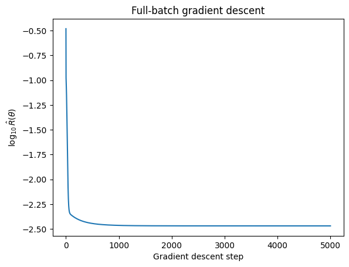
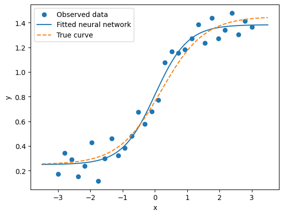
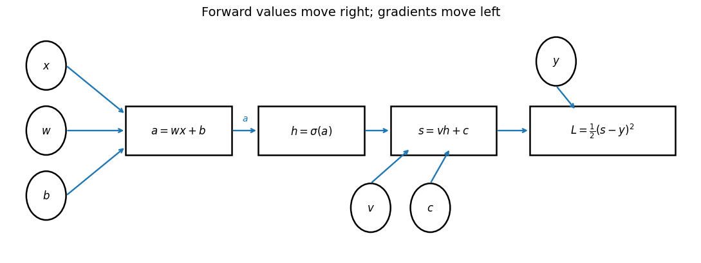
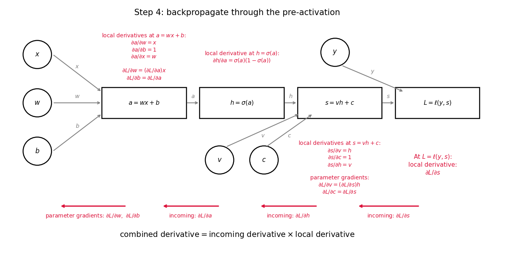
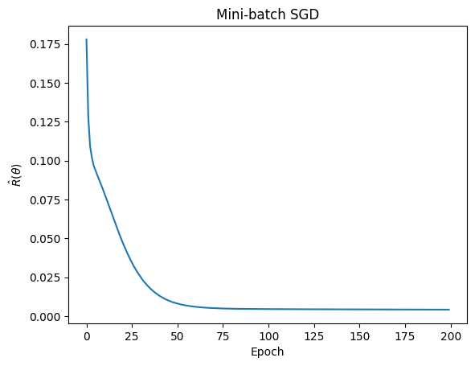
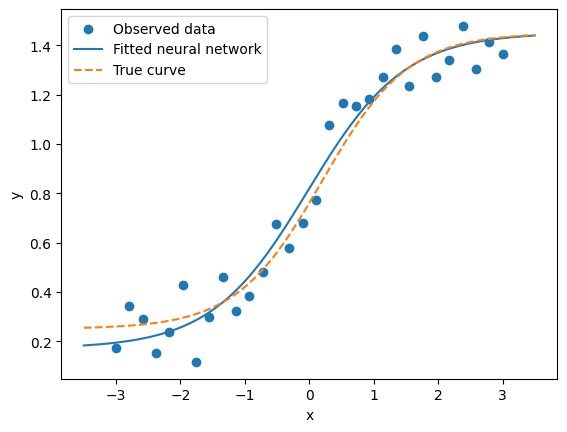

Imports
import numpy as np
import matplotlib.pyplot as pltWarning: AI-assisted materials
These materials were developed with assistance from AI tools. All content has been reviewed and edited by the instructor, who takes final responsibility for its accuracy, clarity, and appropriateness for the course. Students should treat these materials as instructor-reviewed course content while applying the same critical judgment they would use with any technical material. Please report any suspected errors or unclear explanations to ghunt@wm.edu.
Previously we built a score \(s_\theta(x)\) by composing learned layers. Training minimizes empirical risk:
\[ \hat\theta=\arg\min_\theta\hat R(\theta),\qquad \hat R(\theta)=\frac1N\sum_{n=1}^N\ell(y_n,s_\theta(x_n)). \]
Neural-network risk is generally nonconvex so there can be many local minima and potentially flat regions. Iterative optimization need not find a global minimum.
At step \(t\), (full-batch) gradient descent updates all parameters:
\[ \theta^{(t+1)}=\theta^{(t)}-\eta\nabla_\theta\hat R(\theta^{(t)}). \]
The gradient describes local change in risk; we step against it. The learning rate \(\eta>0\) controls the step size: too small is slow, too large can be unstable.
We could derive the gradient for this network by hand.
Write \(a_n=wx_n+b\), \(h_n=\sigma(a_n)\), \(s_n=vh_n+c\), and \(e_n=s_n-y_n\). Since \(\sigma'(a_n)=h_n(1-h_n)\), the chain rule gives
\[ \begin{aligned} \frac{\partial\hat R}{\partial v}&=\frac1N\sum_n e_nh_n, &\frac{\partial\hat R}{\partial c}&=\frac1N\sum_n e_n,\\ \frac{\partial\hat R}{\partial w}&=\frac1N\sum_n e_nv h_n(1-h_n)x_n, &\frac{\partial\hat R}{\partial b}&=\frac1N\sum_n e_nv h_n(1-h_n). \end{aligned} \]
The code packages these four formulas in grad_risk. Its common term is the shared factor \(e_nv h_n(1-h_n)/N\) in the derivatives for \(w\) and \(b\).
def grad_risk(x, y, theta):
N = len(x)
w = theta["w"]
b = theta["b"]
v = theta["v"]
c = theta["c"]
a = w * x + b
h = sigmoid(a)
s = v * h + c
error = s - y
common = (error / N) * v * h * (1 - h)
# sum over x_n ...
return {
"w": np.sum(common * x),
"b": np.sum(common),
"v": np.sum((error / N) * h),
"c": np.sum(error / N),
}To do grad descent:
# Initialize parameters
theta = {
"w": 0.1,
"b": 0.1,
"v": 0.1,
"c": 0.1,
}
eta = 0.5
n_steps = 5000
risk_history = []
for t in range(n_steps):
# Empirical risk
risk = np.mean(0.5 * (y - s(x,theta)) ** 2)
risk_history.append(risk)
# calc grad
dR_dtheta = grad_risk(x, y, theta)
# Update parameters
theta["w"] = theta["w"] - eta * dR_dtheta["w"]
theta["b"] = theta["b"] - eta * dR_dtheta["b"]
theta["v"] = theta["v"] - eta * dR_dtheta["v"]
theta["c"] = theta["c"] - eta * dR_dtheta["c"]plt.plot(np.log10(risk_history))
plt.xlabel("Gradient descent step")
plt.ylabel(r"$\log_{10} \hat{R}(\theta)$")
plt.title("Full-batch gradient descent")
plt.show()
print("Fitted parameters:", theta)
print("Generating parameters:", theta_true)
print(f"Initial risk: {risk_history[0]:.5f}; final risk: {np.mean(0.5 * (y - s(x, theta)) ** 2):.5f}")Fitted parameters: {'w': np.float64(1.9698016107440965), 'b': np.float64(-0.0050733136747773445), 'v': np.float64(1.1346127193820836), 'c': np.float64(0.24880912638825073)}
Generating parameters: {'w': 1.5, 'b': -0.3, 'v': 1.2, 'c': 0.25}
Initial risk: 0.32981; final risk: 0.00340The fitted curve matters more than matching the generating parameters exactly (non-identifiability):
x_grid = np.linspace(-3.5, 3.5, 300)
s_grid = s(x_grid, theta)
s_grid_true = s(x_grid, theta_true)
plt.scatter(x, y, label="Observed data")
plt.plot(x_grid, s_grid, label="Fitted neural network")
plt.plot(x_grid, s_grid_true, linestyle="--", label="True curve")
plt.xlabel("x")
plt.ylabel("y")
plt.legend()
plt.show()
Full-batch descent uses all of the training data:
\[ \nabla_\theta\hat R(\theta) =\frac1N\sum_{n=1}^N\nabla_\theta L_n(\theta) \]
at every step. This can be costly for a large dataset. Stochastic gradient descent in the strict sense uses one randomly selected observation per step. More realistically, mini-batch gradient descent uses a small set of indices \(B_t\subseteq\{1,\ldots,N\}\):
\[ \theta^{(t+1)}=\theta^{(t)} -\eta\underbrace{\frac1{|B_t|}\sum_{n\in B_t} \nabla_\theta L_n(\theta^{(t)})}_{\text{mini-batch gradient}}. \]
The batch size is \(|B_t|\). Full-batch descent uses \(|B_t|=N\); one-observation SGD uses \(|B_t|=1\). A smaller batch gives a cheaper but noisier direction. Neural-network practice often calls mini-batch training simply “SGD.” In practice, we usually shuffle, divide into batches, and then iterate through the batches doing one mini-batch SGD update per batch.
An epoch is one pass through the training observations. For example, if \(N=30\) and batch size \(8\) give four updates per epoch, with six observations in the last batch.
We reset \(\theta\) to the same starting values, shuffle each epoch, and call grad_risk on one mini-batch at a time.
theta = {
"w": 0.1,
"b": 0.1,
"v": 0.1,
"c": 0.1,
}
eta = 0.1
n_epochs = 200
batch_size = 8
risk_history = []
N = len(x)
for epoch in range(n_epochs):
# Shuffle observations at the start of each epoch
shuffled_idx = np.random.permutation(N)
for start in range(0, N, batch_size):
end = start + batch_size
batch_idx = shuffled_idx[start:end]
x_batch = x[batch_idx]
y_batch = y[batch_idx]
# Track full empirical risk for plotting
risk = np.mean(0.5 * (y - s(x, theta)) ** 2)
risk_history.append(risk)
# Calculate mini-batch gradient
dR_dtheta = grad_risk(x_batch, y_batch, theta)
# Update parameters
for key in theta:
theta[key] -= eta * dR_dtheta[key]plt.plot(np.log10(risk_history))
plt.xlabel("Gradient descent step")
plt.ylabel(r"$\log_{10} \hat{R}(\theta)$")
plt.title("Mini-batch gradient descent")
plt.show()
print("Mini-batch fitted parameters:", theta)
print(f"Final full-data risk: {np.mean(0.5 * (y - s(x, theta)) ** 2):.5f}")Mini-batch fitted parameters: {'w': np.float64(1.335135830477404), 'b': np.float64(0.02701399703464155), 'v': np.float64(1.2812509036215123), 'c': np.float64(0.17012064699369667)}
Final full-data risk: 0.00415x_grid = np.linspace(-3.5, 3.5, 300)
s_grid = s(x_grid, theta)
s_grid_true = s(x_grid, theta_true)
plt.scatter(x, y, label="Observed data")
plt.plot(x_grid, s_grid, label="Fitted neural network")
plt.plot(x_grid, s_grid_true, linestyle="--", label="True curve")
plt.xlabel("x")
plt.ylabel("y")
plt.legend()
plt.show()Both methods fit the observed pattern, though the mini-batch path fluctuates.
Our gradient is bespoke: grad_risk contains formulas derived for this particular network. Changing the layers or loss requires new formulas. This is not scalable.
A network builds its prediction by composing smaller functions. The loss adds one more function at the end. For our one-hidden-unit network, the calculation for one observation is
\[ a=wx+b,\qquad h=\sigma(a),\qquad s=vh+c,\qquad L=\tfrac12(s-y)^2. \]
A computational graph shows these operations and their dependencies. An arrow means that one operation uses a value produced earlier. For example, computing \(h\) requires \(a\), and computing \(s\) requires \(h\) along with the parameters \(v,c\).
import matplotlib.pyplot as plt
from matplotlib.patches import Circle, Rectangle
def draw_node(ax, x, y, label, kind="circle", width=1.6, height=0.6, fontsize=12):
if kind == "circle":
patch = Circle((x, y), radius=0.3, fill=False, linewidth=1.8)
else:
patch = Rectangle((x - width / 2, y - height / 2), width, height,
fill=False, linewidth=1.8)
ax.add_patch(patch)
ax.text(x, y, label, ha="center", va="center", fontsize=fontsize)
def draw_arrow(ax, start, end, label=None, color="black", label_offset=(0, 0.15), lw=1.7):
ax.annotate("", xy=end, xytext=start,
arrowprops=dict(arrowstyle="->", linewidth=lw, color=color))
if label is not None:
xm = (start[0] + end[0]) / 2 + label_offset[0]
ym = (start[1] + end[1]) / 2 + label_offset[1]
ax.text(xm, ym, label, ha="center", va="center", fontsize=10, color=color)
fig, ax = plt.subplots(figsize=(11, 4.2))
# Main computation nodes
positions = {
"a": (2, 0),
"h": (4, 0),
"s": (6, 0),
"L": (8.4, 0),
}
draw_node(ax, 0, 0.8, r"$x$", kind="circle")
draw_node(ax, 0, 0.0, r"$w$", kind="circle")
draw_node(ax, 0, -0.8, r"$b$", kind="circle")
draw_node(ax, *positions["a"], r"$a=wx+b$", kind="box")
draw_node(ax, *positions["h"], r"$h=\sigma(a)$", kind="box")
draw_node(ax, *positions["s"], r"$s=vh+c$", kind="box")
draw_node(ax, *positions["L"], r"$L=\frac{1}{2}(s-y)^2$", kind="box", width=2.2)
draw_node(ax, 4.9, -0.95, r"$v$", kind="circle")
draw_node(ax, 5.8, -0.95, r"$c$", kind="circle")
draw_node(ax, 7.7, 0.85, r"$y$", kind="circle")
# Forward arrows
blue = "#1f77b4"
red = "#d62728"
draw_arrow(ax, (0.3, 0.8), (1.2, 0.2), color=blue)
draw_arrow(ax, (0.3, 0.0), (1.2, 0.0), color=blue)
draw_arrow(ax, (0.3, -0.8), (1.2, -0.2), color=blue)
draw_arrow(ax, (2.8, 0), (3.2, 0), label=r"$a$", color=blue)
draw_arrow(ax, (4.8, 0), (5.2, 0), color=blue)
draw_arrow(ax, (6.8, 0), (7.3, 0), color=blue)
draw_arrow(ax, (4.9, -0.65), (5.5, -0.22), color=blue)
draw_arrow(ax, (5.8, -0.65), (6.1, -0.22), color=blue)
draw_arrow(ax, (7.7, 0.55), (8.0, 0.25), color=blue)
ax.set_title("Forward values move right; gradients move left", fontsize=14)
ax.set_xlim(-0.6, 9.8)
ax.set_ylim(-1.55, 1.35)
ax.axis("off")
fig.tight_layout()
plt.show()
The forward pass follows the arrows: start with the input and current parameters, then compute \(a\), \(h\), \(s\), and finally \(L\). This tells us how well the current network predicts this observation.
Training asks a different question: if we change a parameter slightly, how will the final loss change? Here we need derivatives to run gradient descent.
But \(w\) does not appear directly in the loss formula. Its effect travels through several steps:
\[ w\longrightarrow a\longrightarrow h\longrightarrow s\longrightarrow L. \]
Changing \(w\) changes \(a\), which changes \(h\), which changes \(s\), which changes \(L\). The chain rule connects these changes. Backpropagation organizes that chain-rule calculation so that we can obtain derivatives for all the parameters.
First consider a simple chain of scalar values:
\[ q\longrightarrow r\longrightarrow t\longrightarrow L. \]
A local derivative, such as \(\partial r/\partial q\), describes just one link. The chain rule combines the links:
\[ \frac{\partial L}{\partial q} =\frac{\partial L}{\partial t} \frac{\partial t}{\partial r} \frac{\partial r}{\partial q}. \]
Notice what happens if we sequentially calculate derivatives \(\partial L / \partial t\), \(\partial L / \partial r\), \(\partial L / \partial q\) … going backwards through the graph.
First, find \(\partial L/\partial t\).
Next, find \(\partial L/\partial r\):
\[ \frac{\partial L}{\partial r} =\underbrace{\frac{\partial L}{\partial t}}_{\text{already computed }} \underbrace{\frac{\partial t}{\partial r}}_{\text{local derivative}}. \]
Then, find \(\partial L/\partial q\):
\[ \frac{\partial L}{\partial q} =\underbrace{\frac{\partial L}{\partial r}}_{\text{just computed}} \underbrace{\frac{\partial r}{\partial q}}_{\text{one local derivative}}. \]
So the order of our derivative calculations is
\[ \frac{\partial L}{\partial t} \quad\longrightarrow\quad \frac{\partial L}{\partial r} \quad\longrightarrow\quad \frac{\partial L}{\partial q}. \]
Each becomes the starting point for the next step backward.
This reuse is the key idea of backpropagation. Working backward is useful because the derivative needed by the next calculation is already available.
Focus on just one operation, \(r=f(q)\). During the forward pass, it receives \(q\) and produces \(r\).
During the backward pass, it receives \(\partial L/\partial r\) and produces \(\partial L / \partial q\) using the local deriative and chain rule.
Call \(\partial L/\partial r\) this the incoming derivative.
Multiplying connects the input all the way to the loss:
\[ \underbrace{\frac{\partial L}{\partial q}}_{\text{derivative to pass back}}= \underbrace{\frac{\partial L}{\partial r}}_{\text{incoming derivative}} \underbrace{\frac{\partial r}{\partial q}}_{\text{local derivative}}. \]
For example, if \(r=3q\) and the incoming derivative is \(\partial L/\partial r=2\), then \(\partial L/\partial q=2\cdot3=6\).
The node does not need to expand all the functions between \(r\) and \(L\). Their combined effect is already contained in the incoming derivative. It needs only that derivative and its own local rule.
Consequently, back propagation can work entirely locally combining incoming with local to produce the outgoing derivative. The fundamental rule:
outgoing = incoming × localfig, ax = plt.subplots(figsize=(9.5, 4.7))
# Node positions
q_pos = (0, 0)
r_pos = (3.2, 0)
loss_pos = (6.4, 0)
draw_node(ax, *q_pos, r"input: $q$", kind="circle", width=1.7)
draw_node(ax, *r_pos, r"node: $r=f(q)$", kind="box", width=2.0)
draw_node(ax, *loss_pos, r"loss: $L$", kind="circle", width=1.7)
draw_arrow(ax, (0.32, 0), (2.2, 0), label="forward computation", color=blue, label_offset=(0, 0.22))
draw_arrow(ax, (4.2, 0), (6.05, 0), label=r"$L$ depends on $r$", color=blue, label_offset=(0, 0.22))
draw_arrow(ax, (6.05, -0.9), (4.2, -0.9), label=r"upstream: $\partial L/\partial r$", color=red, label_offset=(0, -0.22), lw=2.1)
draw_arrow(ax, (2.2, -0.9), (0.32, -0.9), label=r"output: $\partial L/\partial q$", color=red, label_offset=(0, -0.22), lw=2.1)
ax.text(3.2, -1.35, r"local rule at the node: $\partial r/\partial q$", ha="center", va="center", fontsize=12)
ax.set_title("A node transforms an upstream derivative into an input derivative", fontsize=14)
ax.set_xlim(-0.7, 7.1)
ax.set_ylim(-1.65, 1.0)
ax.axis("off")
fig.tight_layout()
plt.show()
An operation can have several inputs. For example, \(s=vh+c\) takes \(v,h,c\) as inputs. It receives one derivative, \(\partial L/\partial s\), and uses its three local derivatives to calculate
\[ \frac{\partial L}{\partial v}=\frac{\partial L}{\partial s}h, \qquad \frac{\partial L}{\partial h}=\frac{\partial L}{\partial s}v, \qquad \frac{\partial L}{\partial c}=\frac{\partial L}{\partial s}. \]
The derivatives for \(v,c\) are two of the parameter derivatives we wanted. The derivative for \(h\) lets us continue backward through the operation that produced \(h\). Although \(h\) is not a parameter, we need its derivative to reach earlier parameters.
The procedure is:
Caveats: If a value feeds several later operations, its change can affect the loss along several paths. The multivariable chain rule says to add the contributions from those paths before passing the derivative farther backward.
Use the same network for one observation. First compute its values; then move backward from \(L\) through \(s\), \(h\), and \(a\), applying the local rule at each node.
import matplotlib.pyplot as plt
from matplotlib.patches import Circle, Rectangle
def draw_node(ax, x, y, label, kind="circle", width=1.4, height=0.55):
if kind == "circle":
patch = Circle((x, y), radius=0.28, fill=False, linewidth=1.8)
ax.add_patch(patch)
else:
patch = Rectangle(
(x - width / 2, y - height / 2),
width,
height,
fill=False,
linewidth=1.8,
)
ax.add_patch(patch)
ax.text(x, y, label, ha="center", va="center", fontsize=12)
def draw_arrow(ax, start, end):
ax.annotate(
"",
xy=end,
xytext=start,
arrowprops=dict(arrowstyle="->", linewidth=1.5),
)
fig, ax = plt.subplots(figsize=(11, 4))
# Input/parameter nodes
draw_node(ax, 0, 0.8, r"$x$", kind="circle")
draw_node(ax, 0, 0.0, r"$w$", kind="circle")
draw_node(ax, 0, -0.8, r"$b$", kind="circle")
# Computation nodes
draw_node(ax, 2, 0, r"$a = wx + b$", kind="box")
draw_node(ax, 4, 0, r"$h = \phi(a)$", kind="box")
draw_node(ax, 6, 0, r"$s = vh + c$", kind="box")
draw_node(ax, 8, 0, r"$L = \ell(y,s)$", kind="box")
# More input/parameter nodes
draw_node(ax, 4.8, -0.9, r"$v$", kind="circle")
draw_node(ax, 5.4, -0.9, r"$c$", kind="circle")
draw_node(ax, 7.2, 0.85, r"$y$", kind="circle")
# Arrows into a = wx + b
draw_arrow(ax, (0.28, 0.8), (1.3, 0.2))
draw_arrow(ax, (0.28, 0.0), (1.3, 0.0))
draw_arrow(ax, (0.28, -0.8), (1.3, -0.2))
# Main forward arrows
draw_arrow(ax, (2.7, 0), (3.3, 0))
draw_arrow(ax, (4.7, 0), (5.3, 0))
draw_arrow(ax, (6.7, 0), (7.3, 0))
# Arrows into s = vh + c
draw_arrow(ax, (4.9, -0.62), (5.55, -0.22))
draw_arrow(ax, (5.4, -0.62), (5.85, -0.24))
# Arrow into L = ell(y, s)
draw_arrow(ax, (7.25, 0.62), (7.75, 0.25))
ax.set_title("Computational graph for a one-hidden-unit network", fontsize=14)
ax.set_xlim(-0.6, 8.9)
ax.set_ylim(-1.4, 1.4)
ax.axis("off")
fig.tight_layout()
plt.show()
Take \(x=2\), \(y=1\), and \((w,b,v,c)=(0.5,0.1,1.5,-0.2)\). The diagram’s activation \(\phi\) is our sigmoid \(\sigma\).
\[ \begin{aligned} a&=wx+b=(0.5)(2)+0.1=1.1,\\ h&=\sigma(a)=\frac{1}{1+e^{-1.1}}\approx0.7503,\\ s&=vh+c=(1.5)(0.7503)-0.2\approx0.9254,\\ L&=\tfrac12(s-y)^2=\tfrac12(0.9254-1)^2\approx0.0028. \end{aligned} \]
Note: \(h\) and \(v\) will be needed to differentiate the score, and \(h\) will also let us differentiate the sigmoid. We save them rather than recomputing the forward pass at each backward step.
We now keep the parameters fixed and calculate the derivatives with respect to \(w,b,v,c\).
For \(L=\tfrac12(s-y)^2\),
\[ \frac{\partial L}{\partial s}=s-y\approx0.9254-1=-0.0746. \]
For \(s=vh+c\), the incoming derivative is \(\partial L/\partial s\approx-0.0746\). The local derivatives are
\[ \frac{\partial s}{\partial v}=h,\qquad \frac{\partial s}{\partial c}=1,\qquad \frac{\partial s}{\partial h}=v. \]
Use our backprop rules:
\[ \begin{aligned} \frac{\partial L}{\partial v} &=\frac{\partial L}{\partial s}\frac{\partial s}{\partial v} \approx(-0.0746)(0.7503)\approx-0.0560,\\ \frac{\partial L}{\partial c} &=\frac{\partial L}{\partial s}\frac{\partial s}{\partial c} \approx(-0.0746)(1)=-0.0746,\\ \frac{\partial L}{\partial h} &=\frac{\partial L}{\partial s}\frac{\partial s}{\partial h} \approx(-0.0746)(1.5)=-0.1119. \end{aligned} \]
Keep the parameter derivatives for \(v,c\). Pass back \(\partial L/\partial h\) to the sigmoid node.
For \(h=\sigma(a)\), the incoming derivative is \(\partial L/\partial h\approx-0.1119\). The local derivative uses the cached value \(h\):
\[ \frac{\partial h}{\partial a} =\sigma(a)(1-\sigma(a)) =h(1-h)\approx(0.7503)(1-0.7503)\approx0.1874. \]
Use our rule:
\[ \frac{\partial L}{\partial a} =\frac{\partial L}{\partial h}\frac{\partial h}{\partial a} \approx(-0.1119)(0.1874)\approx-0.0210. \]
Pass this derivative back to the node that computed \(a\).
For \(a=wx+b\), the incoming derivative is \(\partial L/\partial a\approx-0.0210\). The local derivatives are
\[ \frac{\partial a}{\partial w}=x=2,\qquad \frac{\partial a}{\partial b}=1,\qquad \frac{\partial a}{\partial x}=w=0.5. \]
Our rule:
\[ \begin{aligned} \frac{\partial L}{\partial w} &=\frac{\partial L}{\partial a}\frac{\partial a}{\partial w} \approx(-0.0210)(2)\approx-0.0419,\\ \frac{\partial L}{\partial b} &=\frac{\partial L}{\partial a}\frac{\partial a}{\partial b} \approx(-0.0210)(1)\approx-0.0210. \end{aligned} \]
In parameter order \(\theta=(w,b,v,c)\),
\[ \nabla_\theta L\approx(-0.0419,\ -0.0210,\ -0.0560,\ -0.0746). \]
These are the derivatives for one observation. In real life we use cute linear algebra to calculate these all at once so that we can do minibatch SGD.
The saved figure shows the complete reverse pass. During class, the optional slider can reveal one step at a time.
import matplotlib.pyplot as plt
from matplotlib.patches import Circle, Rectangle
try:
import ipywidgets as widgets
from IPython.display import display, clear_output
HAS_WIDGETS = True
except Exception:
widgets = None
HAS_WIDGETS = False
from IPython.display import display, clear_output
def draw_circle(ax, x, y, text, radius=0.32, fontsize=12):
patch = Circle((x, y), radius=radius, fill=False, linewidth=1.8)
ax.add_patch(patch)
ax.text(x, y, text, ha="center", va="center", fontsize=fontsize)
def draw_box(ax, x, y, text, width=1.9, height=0.7, fontsize=11):
patch = Rectangle(
(x - width / 2, y - height / 2),
width,
height,
fill=False,
linewidth=1.8,
)
ax.add_patch(patch)
ax.text(x, y, text, ha="center", va="center", fontsize=fontsize)
def draw_arrow(ax, start, end, label=None, label_offset=(0, 0.15), lw=1.5, color="black"):
ax.annotate(
"",
xy=end,
xytext=start,
arrowprops=dict(arrowstyle="->", linewidth=lw, color=color),
)
if label is not None:
xm = (start[0] + end[0]) / 2 + label_offset[0]
ym = (start[1] + end[1]) / 2 + label_offset[1]
ax.text(xm, ym, label, ha="center", va="center", fontsize=10, color=color)
def draw_backprop_step(step=0):
fig, ax = plt.subplots(figsize=(13, 6.5))
pos = {
"x": (0, 1.1),
"w": (0, 0.0),
"b": (0, -1.1),
"a": (2.4, 0),
"h": (4.6, 0),
"v": (4.1, -1.3),
"c": (5.1, -1.3),
"s": (6.8, 0),
"y": (6.7, 1.15),
"L": (9.0, 0),
}
# Inputs and parameters
draw_circle(ax, *pos["x"], r"$x$")
draw_circle(ax, *pos["w"], r"$w$")
draw_circle(ax, *pos["b"], r"$b$")
draw_circle(ax, *pos["v"], r"$v$")
draw_circle(ax, *pos["c"], r"$c$")
draw_circle(ax, *pos["y"], r"$y$")
# Computation nodes
draw_box(ax, *pos["a"], r"$a = wx + b$")
draw_box(ax, *pos["h"], r"$h = \sigma(a)$")
draw_box(ax, *pos["s"], r"$s = vh + c$")
draw_box(ax, *pos["L"], r"$L = \ell(y,s)$")
# Forward arrows
draw_arrow(ax, (0.35, 1.1), (1.45, 0.25), label=r"$x$", color="gray")
draw_arrow(ax, (0.35, 0.0), (1.45, 0.0), label=r"$w$", color="gray")
draw_arrow(ax, (0.35, -1.1), (1.45, -0.25), label=r"$b$", color="gray")
draw_arrow(ax, (3.35, 0), (3.65, 0), label=r"$a$", color="gray")
draw_arrow(ax, (5.55, 0), (5.85, 0), label=r"$h$", color="gray")
draw_arrow(ax, (4.25, -1.0), (5.9, -0.25), label=r"$v$", label_offset=(0, -0.12), color="gray")
draw_arrow(ax, (5.15, -1.0), (6.2, -0.25), label=r"$c$", label_offset=(0, -0.12), color="gray")
draw_arrow(ax, (7.75, 0), (8.05, 0), label=r"$s$", color="gray")
draw_arrow(ax, (6.85, 0.85), (8.25, 0.25), label=r"$y$", color="gray")
# Step title
titles = {
0: "Forward pass: compute values from left to right",
1: "Step 1: start at the loss",
2: "Step 2: backpropagate through the output score",
3: "Step 3: backpropagate through the sigmoid activation",
4: "Step 4: backpropagate through the pre-activation",
}
ax.text(4.5, 2.0, titles[step], ha="center", fontsize=15)
# Backward arrows and local derivative notes
y_back = -2.35
back_color = "crimson"
if step >= 1:
draw_arrow(
ax,
(8.6, y_back),
(7.2, y_back),
label=r"incoming: $\partial L/\partial s$",
label_offset=(0, -0.22),
lw=2.2,
color=back_color,
)
ax.text(
8.9,
-1.15,
r"At $L=\ell(y,s)$:"
+ "\n"
+ r"local derivative:"
+ "\n"
+ r"$\partial L/\partial s$",
ha="center",
va="top",
fontsize=11,
color=back_color,
)
if step >= 2:
draw_arrow(
ax,
(6.3, y_back),
(5.0, y_back),
label=r"incoming: $\partial L/\partial h$",
label_offset=(0, -0.22),
lw=2.2,
color=back_color,
)
ax.text(
6.8,
-0.85,
r"local derivatives at $s=vh+c$:"
+ "\n"
+ r"$\partial s/\partial v = h$"
+ "\n"
+ r"$\partial s/\partial c = 1$"
+ "\n"
+ r"$\partial s/\partial h = v$"
+ "\n\n"
+ r"parameter gradients:"
+ "\n"
+ r"$\partial L/\partial v = (\partial L/\partial s)h$"
+ "\n"
+ r"$\partial L/\partial c = \partial L/\partial s$",
ha="center",
va="top",
fontsize=10,
color=back_color,
)
if step >= 3:
draw_arrow(
ax,
(4.1, y_back),
(2.8, y_back),
label=r"incoming: $\partial L/\partial a$",
label_offset=(0, -0.22),
lw=2.2,
color=back_color,
)
ax.text(
4.6,
1.05,
r"local derivative at $h=\sigma(a)$:"
+ "\n"
+ r"$\partial h/\partial a = \sigma(a)(1-\sigma(a))$",
ha="center",
va="center",
fontsize=10,
color=back_color,
)
if step >= 4:
draw_arrow(
ax,
(2.0, y_back),
(0.5, y_back),
label=r"parameter gradients: $\partial L/\partial w,\ \partial L/\partial b$",
label_offset=(0, -0.22),
lw=2.2,
color=back_color,
)
ax.text(
2.4,
1.05,
r"local derivatives at $a=wx+b$:"
+ "\n"
+ r"$\partial a/\partial w = x$"
+ "\n"
+ r"$\partial a/\partial b = 1$"
+ "\n"
+ r"$\partial a/\partial x = w$"
+ "\n\n"
+ r"$\partial L/\partial w = (\partial L/\partial a)x$"
+ "\n"
+ r"$\partial L/\partial b = \partial L/\partial a$",
ha="center",
va="center",
fontsize=10,
color=back_color,
)
# General rule box
ax.text(
4.5,
-3.0,
r"$\text{combined derivative}"
r"="
r"\text{incoming derivative}"
r"\times"
r"\text{local derivative}$",
ha="center",
va="center",
fontsize=14,
)
ax.set_xlim(-0.75, 10.6)
ax.set_ylim(-3.35, 2.25)
ax.axis("off")
fig.tight_layout()
plt.show()
# Always leave a complete static view in the saved notebook and rendered notes.
draw_backprop_step(4)
# Optional step-by-step view in an interactive notebook.
if HAS_WIDGETS:
slider = widgets.IntSlider(value=0, min=0, max=4, description="Step")
out = widgets.Output()
def update(change):
with out:
clear_output(wait=True)
draw_backprop_step(change["new"])
slider.observe(update, names="value")
display(slider, out)
def forward_pass(x, y, theta):
w = theta["w"]
b = theta["b"]
v = theta["v"]
c = theta["c"]
# Forward pass
a = w * x + b
h = sigmoid(a)
s_hat = v * h + c
# Squared loss for each observation
loss = 0.5 * (y - s_hat) ** 2
# Empirical risk
risk = np.mean(loss)
cache = {
"a": a,
"h": h,
"s_hat": s_hat,
"loss": loss,
"risk": risk,
}
return risk, cachedef backward_pass(x, y, theta, cache):
N = len(x)
w = theta["w"]
v = theta["v"]
# grab cached values computed on forward pass
a = cache["a"]
h = cache["h"]
s_hat = cache["s_hat"]
##---> Start at the empirical risk
# R_hat = (1/N) sum_n L_n
# L_n = 1/2 (y_n - s_hat_n)^2
# Upstream derivative from R_hat to each L_n
dR_dloss = np.ones(N) / N
# Local derivative of L_n with respect to s_hat_n
dloss_ds = s_hat - y
# Combined derivative: dR_hat / ds_hat_n
dR_ds = dR_dloss * dloss_ds
##---> Backpropagate through s_hat = v h + c
# Local derivatives
ds_dv = h
ds_dc = np.ones(N)
ds_dh = v
# Combined derivatives
dR_dv = np.sum(dR_ds * ds_dv) #sum over n since its a param
dR_dc = np.sum(dR_ds * ds_dc) #sum over n since its a param
dR_dh = dR_ds * ds_dh
##---> Backpropagate through h = sigmoid(a)
# Local derivative
dh_da = h * (1 - h)
# Combined derivative
dR_da = dR_dh * dh_da
##---> Backpropagate through a = w x + b
# Local derivatives
da_dw = x
da_db = np.ones(N)
# Combined derivatives
dR_dw = np.sum(dR_da * da_dw) #sum over n since its a param
dR_db = np.sum(dR_da * da_db) #sum over n since its a param
grads = {
"w": dR_dw,
"b": dR_db,
"v": dR_dv,
"c": dR_dc,
}
backward_cache = {
"dR_dloss": dR_dloss,
"dloss_ds": dloss_ds,
"dR_ds": dR_ds,
"ds_dv": ds_dv,
"ds_dc": ds_dc,
"ds_dh": ds_dh,
"dR_dv": dR_dv,
"dR_dc": dR_dc,
"dR_dh": dR_dh,
"dh_da": dh_da,
"dR_da": dR_da,
"da_dw": da_dw,
"da_db": da_db,
"dR_dw": dR_dw,
"dR_db": dR_db,
}
return grads, backward_cachetheta_check = {"w": 0.1, "b": 0.1, "v": 0.1, "c": 0.1}
risk, cache = forward_pass(x, y, theta_check)
grad_backprop, _ = backward_pass(x, y, theta_check, cache)
grad_bespoke = grad_risk(x, y, theta_check)
print(f"Empirical risk: {risk:.5f}")
for key in theta_check:
print(f"{key}: bespoke = {grad_bespoke[key]: .6f}, backprop = {grad_backprop[key]: .6f}")
assert all(np.allclose(grad_backprop[key], grad_bespoke[key]) for key in theta_check)Empirical risk: 0.32981
w: bespoke = -0.019364, backprop = -0.019364
b: bespoke = -0.016310, backprop = -0.016310
v: bespoke = -0.367809, backprop = -0.367809
c: bespoke = -0.663169, backprop = -0.663169The matching numbers show that backpropagation did not change the gradient. It changed how we organize its calculation. Let’s use that backward function inside a mini-batch training loop, again resetting the parameters before fitting.
theta = {
"w": 0.1,
"b": 0.1,
"v": 0.1,
"c": 0.1,
}
eta = 0.1
n_epochs = 200
batch_size = 8
risk_history = []
N = len(x)
for epoch in range(n_epochs):
# Shuffle observations at the start of each epoch
shuffled_idx = np.random.permutation(N)
for start in range(0, N, batch_size):
end = start + batch_size
batch_idx = shuffled_idx[start:end]
x_batch = x[batch_idx]
y_batch = y[batch_idx]
# Forward pass on the mini-batch
batch_risk, batch_cache = forward_pass(x_batch, y_batch, theta)
# Backward pass on the mini-batch
dR_dtheta, backward_cache = backward_pass(
x_batch,
y_batch,
theta,
batch_cache
)
# Mini-batch SGD update
for key in theta:
theta[key] = theta[key] - eta * dR_dtheta[key]
# Track full empirical risk once per epoch
full_risk, _ = forward_pass(x, y, theta)
risk_history.append(full_risk)
if (epoch + 1) % 10 == 0:
print(
f"epoch {epoch+1:4d} | "
f"risk = {full_risk:.6f} | "
f"w = {theta['w']:.3f}, "
f"b = {theta['b']:.3f}, "
f"v = {theta['v']:.3f}, "
f"c = {theta['c']:.3f}"
)epoch 10 | risk = 0.081620 | w = 0.351, b = 0.122, v = 0.494, c = 0.569
epoch 20 | risk = 0.049912 | w = 0.622, b = 0.102, v = 0.702, c = 0.467
epoch 30 | risk = 0.026434 | w = 0.826, b = 0.083, v = 0.914, c = 0.383
epoch 40 | risk = 0.013927 | w = 0.964, b = 0.065, v = 1.062, c = 0.293
epoch 50 | risk = 0.008362 | w = 1.055, b = 0.053, v = 1.165, c = 0.238
epoch 60 | risk = 0.006090 | w = 1.113, b = 0.044, v = 1.227, c = 0.199
epoch 70 | risk = 0.005168 | w = 1.154, b = 0.040, v = 1.270, c = 0.184
epoch 80 | risk = 0.004765 | w = 1.183, b = 0.036, v = 1.291, c = 0.168
epoch 90 | risk = 0.004600 | w = 1.204, b = 0.034, v = 1.303, c = 0.163
epoch 100 | risk = 0.004508 | w = 1.223, b = 0.032, v = 1.307, c = 0.154
epoch 110 | risk = 0.004457 | w = 1.238, b = 0.031, v = 1.308, c = 0.152
epoch 120 | risk = 0.004405 | w = 1.251, b = 0.030, v = 1.309, c = 0.155
epoch 130 | risk = 0.004369 | w = 1.263, b = 0.030, v = 1.306, c = 0.156
epoch 140 | risk = 0.004335 | w = 1.274, b = 0.030, v = 1.304, c = 0.160
epoch 150 | risk = 0.004301 | w = 1.285, b = 0.029, v = 1.299, c = 0.160
epoch 160 | risk = 0.004270 | w = 1.294, b = 0.029, v = 1.295, c = 0.163
epoch 170 | risk = 0.004238 | w = 1.305, b = 0.028, v = 1.292, c = 0.165
epoch 180 | risk = 0.004209 | w = 1.315, b = 0.028, v = 1.288, c = 0.167
epoch 190 | risk = 0.004181 | w = 1.325, b = 0.027, v = 1.284, c = 0.168
epoch 200 | risk = 0.004154 | w = 1.334, b = 0.027, v = 1.280, c = 0.171plt.plot(risk_history)
plt.xlabel("Epoch")
plt.ylabel(r"$\hat{R}(\theta)$")
plt.title("Mini-batch SGD")
plt.show()
x_grid = np.linspace(-3.5, 3.5, 300)
s_grid = s(x_grid, theta)
s_grid_true = s(x_grid, theta_true)
plt.scatter(x, y, label="Observed data")
plt.plot(x_grid, s_grid, label="Fitted neural network")
plt.plot(x_grid, s_grid_true, linestyle="--", label="True curve")
plt.xlabel("x")
plt.ylabel("y")
plt.legend()
plt.show()
See: Chapter 32. Questions 15–16 concern the optional tensor extension in the advanced lecture.